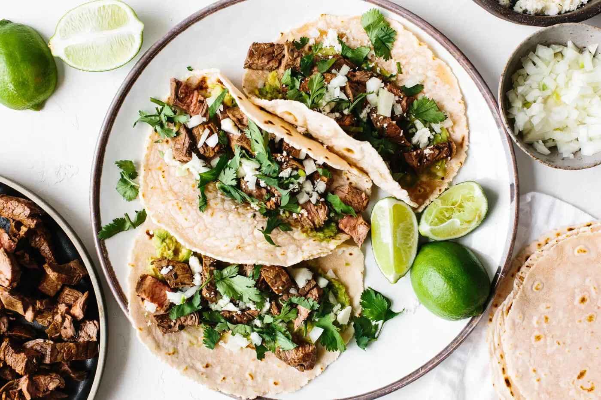

Carne Asada Tacos!

Description
These carne asada tacos are the perfect dish to have on a nice relaxing day by the pool.
With a citrus-y grilled carne asada, topped with beautiful garnishes of your choice, you really cannot go wrong.
Who doesn't enjoy tacos?
Getting started
To get started grill your steak and chop it up. Once this is done grab a tortilla and spread some avocado on it.
Then proceed to add your delicious carne asada, sprinkle some cojita or queso fresco cheese, chopped onion and some fresh cilantro.
Squeeze some fresh lime to top it off and boom you're good to go! Enjoy!!
Ingredients
- Carne Asada (flank steak, but skirt steak will do just fine
- 2 avocados (smashed avocado is used in this recipe, but you can use guacamole)
- 1/3 cup onion (unless you're alergic, diced yellow, white, or red onions will do just fine)
- Lime (a squeeze of fresh lime is always a good time)
- 1/2 cup of cilantro (you can never go wrong with fresh cilantro)
- 3 tbsp cojita cheese (cojita cheese is the best and only option for mexican tacos)
- 6 tortillas (you could make cassava flour tortilas, but any will be fantastic)
Steps
- Grill the carne asada until it is cooked to your liking. Slice it against the grain, then chop it into small pieces
- Use a spoon to mash the avocado and spread a large spoonful or two onto each tortilla.
- Top the avocado with chopped carne asada, a sprinkle of cojita cheese, some diced onion and fresh cilantro.
- Squeeze fresh lime juice on top.
- Enjoy, maybe grab a drink
Want to try some other recipes?
Return home